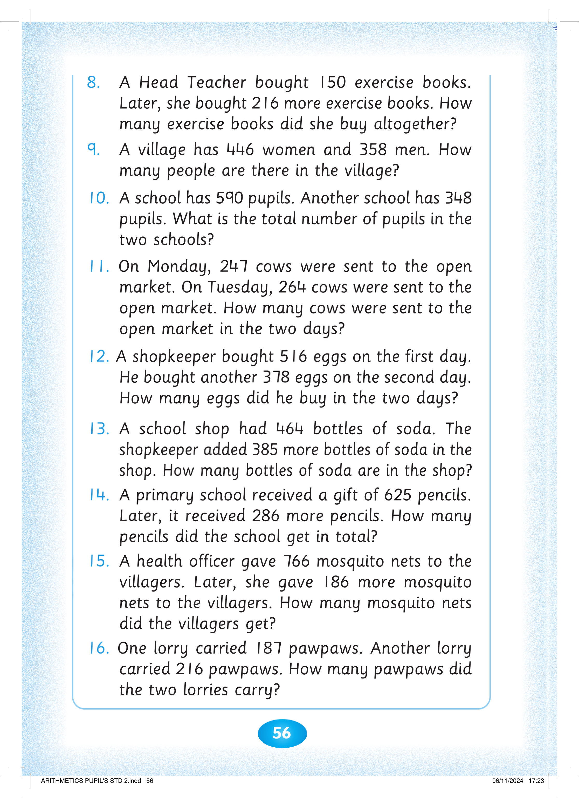

56

8. A Head Teacher bought 150 exercise books.


Later, she bought 216 more exercise books. How

many exercise books did she buy altogether?
9. A village has 446 women and 358 men. How many people are there in the village?
10. A school has 590 pupils. Another school has 348
pupils. What is the total number of pupils in the two schools?
11. On Monday, 247 cows were sent to the open market. On Tuesday, 264 cows were sent to the open market. How many cows were sent to the open market in the two days?
12. A shopkeeper bought 516 eggs on the first day.
He bought another 378 eggs on the second day.
How many eggs did he buy in the two days?
13. A school shop had 464 bottles of soda. The
shopkeeper added 385 more bottles of soda in the shop. How many bottles of soda are in the shop?
14. A primary school received a gift of 625 pencils.
Later, it received 286 more pencils. How many pencils did the school get in total?
15. A health officer gave 766 mosquito nets to the
villagers. Later, she gave 186 more mosquito
nets to the villagers. How many mosquito nets did the villagers get?
16. One lorry carried 187 pawpaws. Another lorry carried 216 pawpaws. How many pawpaws did the two lorries carry?


ARITHMETICS PUPIL'S STD 2.indd 56
06/11/2024 17:23